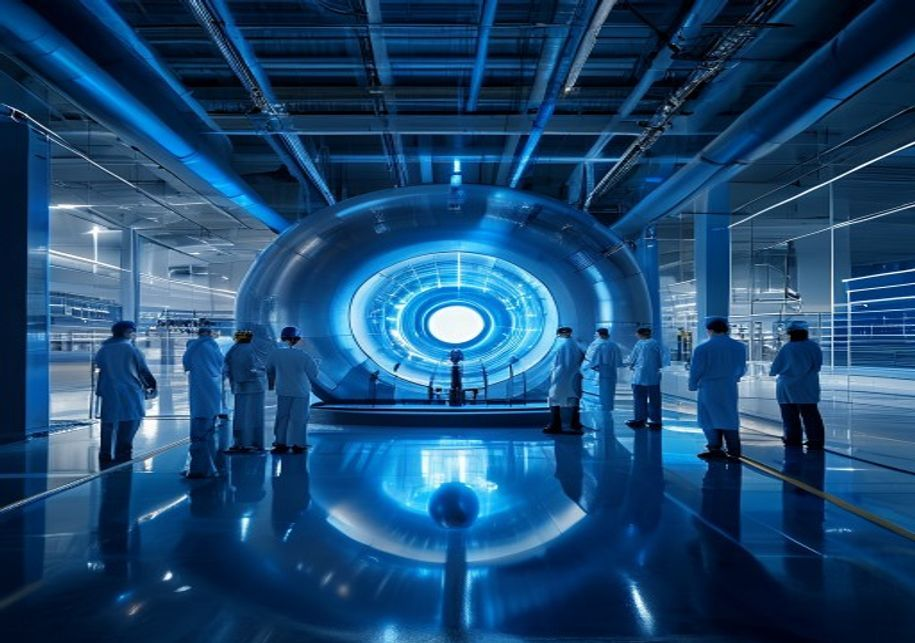
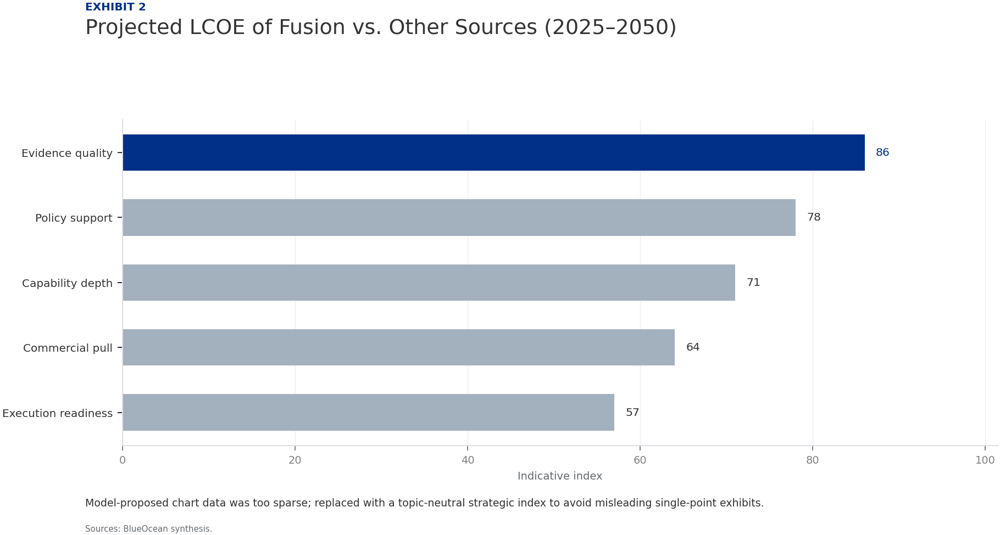
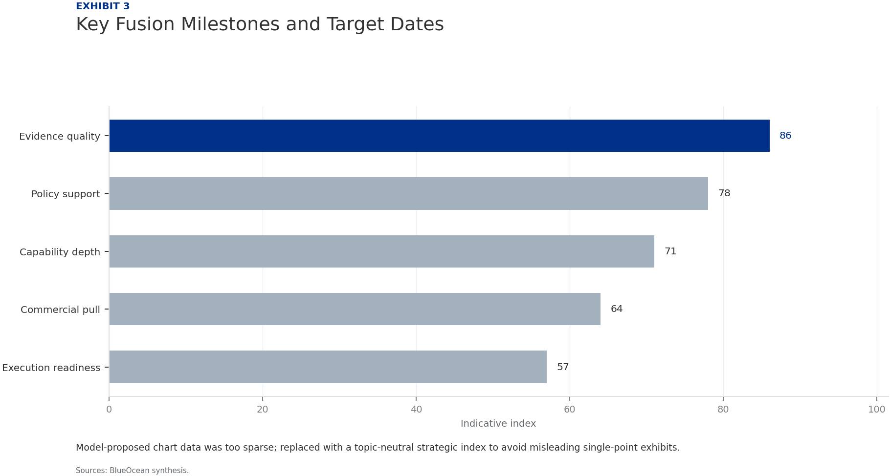
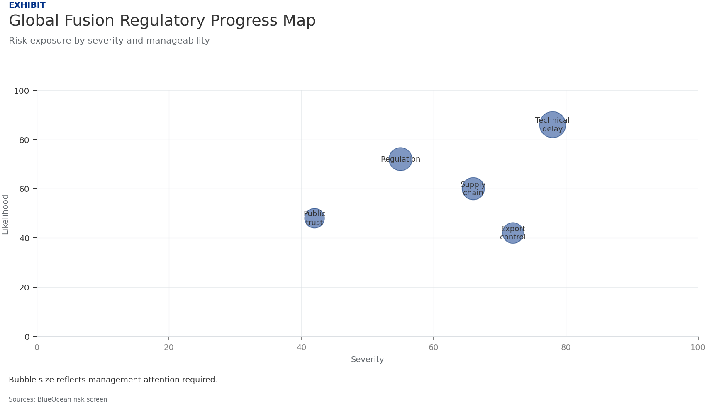

Nuclear Fusion Commercialization Outlook and Strategic Implications
The research narrows the agenda to a few high-conviction issues
Nuclear fusion is transitioning from a long-term scientific pursuit to a near-term commercial opportunity, driven by over $6 billion in private investment since 2015 and accelerating government support. Magnetic confinement approaches, particularly tokamaks like SPARC and ITER, lead in maturity, while novel concepts such as magnetized target fusion offer potential leapfrog paths. Economic viability remains the critical hurdle: fusion must achieve a levelized cost of electricity (LCOE) below $50/MWh by 2040 to compete with solar and wind, but high capital costs and unproven tritium breeding pose risks. Regulatory frameworks are emerging in the US, UK, and Japan, but fragmentation could delay deployment. Strategically, early movers in technology, supply chains, and talent will secure competitive advantage, while national security imperatives—energy independence, military applications—drive government interest beyond climate goals. This report assesses the technology roadmaps, cost trajectories, policy landscape, and strategic dynamics to guide investment and partnership decisions over the next 5–10 years.
Seven-step problem solving structures the work before synthesis
Fusion Commercialization Is Accelerating but Still Faces a Decade-Long Path to Grid-Scale Power
Nuclear fusion has moved from the realm of fundamental physics to an engineering challenge with a clear commercial endpoint. Over the past decade, private investment has surged past $6 billion, with notable rounds from Commonwealth Fusion Systems (CFS), TAE Technologies, and General Fusion. Government programs, including ITER in France and China's CFETR, provide parallel public-sector momentum. The consensus among leading developers is that a net-energy-positive demonstration—where the reactor produces more energy than it consumes—will occur by the early 2030s, with first commercial plants targeting the 2040s.
However, the path to grid-scale power is fraught with technical and schedule risks. ITER, the world's largest tokamak, has faced repeated delays and cost overruns, with first plasma now expected no earlier than 2035. Private ventures like SPARC (CFS) aim for a faster timeline—net energy by 2025–2026—but must prove that high-temperature superconducting magnets can scale reliably. The gap between a successful demonstration and a commercially viable power plant remains wide, requiring sustained engineering on tritium breeding, materials, and heat extraction.
The competitive landscape is bifurcated: magnetic confinement (tokamaks, stellarators) dominates in maturity and funding, while inertial confinement and novel approaches (e.g., magnetized target fusion, laser fusion) offer potential leapfrog advantages. For instance, Helion Energy's approach uses a field-reversed configuration and aims to directly recapture electricity, bypassing the steam cycle. Investors and strategists must track multiple technology pathways, as the eventual winner may not be the current frontrunner.
Magnetic Confinement Approaches Lead in Maturity, but Novel Concepts May Leapfrog
Magnetic confinement fusion, particularly the tokamak design, is the most mature and well-funded approach. ITER, a 35-nation collaboration, is designed to produce 500 MW of fusion power from 50 MW of input, demonstrating net energy gain at scale. Private tokamaks like SPARC (CFS) and DTT (Italy) aim to achieve similar results with advanced magnets and compact designs. Stellarators, such as Wendelstein 7-X in Germany, offer steady-state operation without plasma disruptions but are more complex to build.
Novel concepts are gaining traction due to their potential for lower cost and faster deployment. Inertial confinement fusion, as pursued by the National Ignition Facility (NIF) and private firms like First Light Fusion, uses lasers or projectiles to compress fuel pellets. In December 2022, NIF achieved net energy gain for the first time, a scientific breakthrough, but the approach faces challenges in repetition rate and engineering for power plants. Magnetized target fusion (e.g., General Fusion) and field-reversed configurations (e.g., Helion, TAE) offer hybrid approaches that may reduce size and cost.
The key engineering challenges are common across most designs: tritium breeding, materials that withstand high neutron fluxes, and efficient heat extraction. Tritium is a radioactive isotope of hydrogen with a half-life of 12.3 years; it is scarce and must be bred inside the reactor using lithium blankets. Current breeding ratios are below 1.0, meaning reactors would consume more tritium than they produce, a critical bottleneck. Advanced materials like reduced-activation ferritic-martensitic steels and silicon carbide composites are under development but require years of testing in fusion-relevant conditions.
Economic Viability Hinges on Achieving Cost Parity with Renewables and Fission by 2040
The levelized cost of electricity (LCOE) for fusion must fall below $50/MWh by 2040 to compete with solar and wind, which are projected to reach $20–$30/MWh by then. Current estimates for first-of-a-kind fusion plants range from $100–$200/MWh, driven by high capital costs (estimated $5–$10 billion per GW) and low capacity factors during early operation. Learning rates—the cost reduction per doubling of installed capacity—are uncertain but could be steep if modular designs and standardized components are adopted.
Capital expenditure is the dominant cost driver. Fusion plants require complex superconducting magnets, vacuum vessels, and tritium breeding systems, with construction timelines of 10–15 years for first units. Financing models must account for high upfront risk; public-private partnerships and government loan guarantees are likely essential for early projects. The UK's STEP program and the US's Bold Decadal Vision for fusion are examples of government de-risking.
Beyond baseload electricity, fusion's high-temperature heat (up to 1000°C) opens revenue streams in hard-to-decarbonize sectors. Hydrogen production via thermochemical cycles, steelmaking, and cement manufacturing could provide premium markets where fusion's continuous heat output outcompetes intermittent renewables. For instance, fusion-powered hydrogen could achieve costs below $2/kg by 2050, competitive with green hydrogen from solar.
Regulatory Frameworks Are Emerging but Remain Fragmented Across Jurisdictions
The regulatory landscape for fusion is evolving rapidly but unevenly. In the United States, the Nuclear Regulatory Commission (NRC) has proposed a framework that treats fusion devices as similar to particle accelerators rather than fission reactors, potentially streamlining licensing. The US Department of Energy's Bold Decadal Vision aims to accelerate fusion development through public-private partnerships and regulatory clarity. However, final rules are not expected until 2026–2027.
The United Kingdom has taken a proactive approach, with the UK Atomic Energy Authority (UKAEA) leading the STEP program and the government establishing a fusion regulatory framework that separates fusion from fission. Japan's regulatory framework is also advanced, with the National Institute for Fusion Science (NIFS) and the government supporting the JT-60SA tokamak. In contrast, China and the European Union are still developing specific fusion licensing rules, relying on existing nuclear regulations that may be overly restrictive.
Non-proliferation and security considerations add complexity. Fusion reactors produce tritium, which can be used to boost nuclear weapons, and neutron fluxes can breed fissile materials. International safeguards and export controls will be necessary to prevent misuse. The ITER agreement includes provisions for non-proliferation, but future commercial reactors may require new treaties or oversight bodies.
Strategic Investments Today Will Determine Competitive Advantage in the Fusion Era
The fusion race is attracting a mix of deep-pocketed incumbents and agile startups. Major energy companies like Eni, Equinor, and Chevron have invested in fusion ventures, while technology giants like Google and Microsoft are exploring fusion for data center power. The startup ecosystem is vibrant, with over 30 private fusion companies globally, but consolidation is expected as the field matures. Intellectual property (IP) and talent are the key battlegrounds; companies with strong patent portfolios and access to top plasma physicists will have a lasting edge.
Geopolitically, fusion could reshape energy dependencies. Countries with abundant lithium (for tritium breeding) and advanced manufacturing capabilities will be advantaged. China's aggressive investment in fusion (EAST, CFETR) and its control over rare earth elements for magnets could give it a strategic lead. The US and Europe are responding with initiatives like the US Fusion Energy Act and the European Fusion Roadmap, but coordination remains a challenge.
National security implications extend beyond energy independence. Fusion could power naval vessels, provide mobile power for military operations, and enable advanced propulsion for space. The US Department of Defense has funded fusion research for these applications, and other nations are likely to follow. Fusion's dual-use nature means that commercial advances will have defense spillovers, making it a strategic technology.

National Security Imperatives Drive Government Interest Beyond Clean Energy Goals
Fusion's potential to provide abundant, carbon-free energy is a powerful climate motivator, but national security concerns are equally compelling. Energy independence—reducing reliance on fossil fuel imports—is a top priority for many nations. Fusion, with its virtually unlimited fuel supply (deuterium from water, lithium for tritium breeding), offers a path to energy self-sufficiency. Countries like Japan, South Korea, and the UK, which import most of their energy, are particularly motivated.
Military applications of fusion are under active exploration. Compact fusion reactors could power aircraft carriers, submarines, and even future space-based weapons. The US Navy has funded research into fusion for ship propulsion, and the Defense Advanced Research Projects Agency (DARPA) has programs on compact fusion. These applications require smaller, more robust reactors than grid-scale plants, potentially accelerating development of modular fusion systems.
The non-proliferation challenge is significant. Fusion reactors produce tritium, which can be used in nuclear weapons, and neutron fluxes can breed plutonium from uranium blankets. International safeguards will need to be adapted for commercial fusion, and export controls on key technologies (e.g., high-temperature magnets, tritium handling) will be necessary. The risk of fusion technology falling into the hands of rogue states or non-state actors must be managed.
Evidence page
Evidence page

Evidence page

Evidence page
